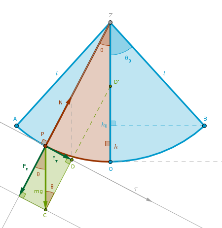
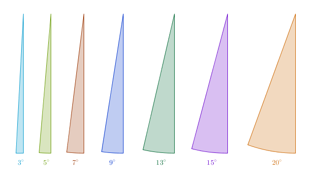
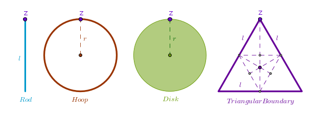

1) Law of Motion
2) Solution
3) Small Angles
4) \(g\), \(\pi\), Reality
5) Procedure
6) Sample Calculation
7) Huygens
8) More Pendulums
Law of Motion
As it is customary in physics which, as was duly noted, produces exact solutions for approximate problems, we shall at first eliminate some number of practical phenomena from the study of pendulum's motion. We shall discard the friction, the sound waves production, the reactionary forces of the pivot assembly, the mass of the pendulum's rod, its geometry change due to motion, the air resistance and a plethora of atmospheric factors like pressure, temperature, humidity, etc.
Such an arrangement of a point mass \(m\) swinging at the end of an absolutely rigid massless rod of length \(l\) about a fixed point in a uniform gravitational field is called a mathematical or ideal or simple (gravity) pendulum.
To find a practically useful information - the length of the rod \(l\) for a known period \(T\) we first need to find the pendulum's law of motion. We shall derive it in three ways - via Newton, Torque and Lagrange.
Newton
Before we jump to the equations let us talk about pendulum's motion at the gut or intuitive level. When the pendulum is at rest it occupies the position along the equilibrium line \(ZO\). The force due to gravity \(mg\) is balanced by the rod's tension force \(N\), the pendulum's velocity is zero and so are its acceleration, kinetic and potential energies. Using our muscle power we move the pendulum to its left extreme position, point \(A\), and let it go.
At this extreme point \(A\) (as well as at \(B\)) the magnitude of \(m\)'s normal acceleration \(a_n\) which points directly at \(Z\) and tracks the change of direction of \(m\)'s velocity is the smallest and so are the magnitudes of the tension force \(N\) and \(m\)'s kinetic energy. The magnitude of the tangential acceleration \(a_{\tau}\) which is tangent to \(m\)'s trajectory and tracks the change of magnitude of \(m\)'s velocity is the largest and so is \(m\)'s potential energy. After being zero for an instance the magnitude of \(m\)'s velocity \(v\) grows quickly at first and at that stage vectors \(a_{\tau}\) and \(v\) point in the same direction - towards the equilibrium point \(O\). The magnitude and the direction of the force due to gravity \(mg\) remains constant at all times.
By the time \(m\) arrives at \(O\) it covers one quarter of its period. The magnitudes of \(m\)'s \(a_n\), \(N\), \(v\) and kinetic energy reach their maximums while the magnitudes of its \(a_{\tau}\) and potential energy are at their lowest. As \(m\) moves away from \(O\) towards \(B\) the magnitudes of \(a_n\), \(N\) and \(v\) begin to shrink, \(a_{\tau}\) becomes negative as \(m\) begins to slow down and as a result vectors \(a_{\tau}\) and \(v\) point in different directions - \(a_{\tau}\) points towards \(O\) again while \(v\) points towards \(B\).
By the time \(m\) arrives at \(B\) it covers one half of its period. The magnitudes of \(m\)'s \(a_n\), \(N\), \(v\) and kinetic energy reach their minimums while the magnitudes of \(a_{\tau}\) and potential energy reach their maximums. The velocity of \(m\) changes its direction towards \(O\) and begins to grow, \(a_{\tau}\) points in the same direction and the above \(A\) to \(O\) scenario plays out again but this time in the opposite direction, from \(B\) to \(O\). At \(O\) \(m\) covers three quarters of its period and by the time it reaches \(A\) again the entire period is covered:
According to Newton's second law the vector sum of all the forces acting on a body equals the first derivative of \(mv\) over time. Let us project these forces on the \(\tau\) axis that runs perpendicular to \(ZP\) where \(P\) is the location of the point mass \(m\) at an arbitrary time \(t\). Since the mass remains constant, we take the derivative of \(v_{\tau}\) only:
$$\begin{equation} \frac {d}{dt}(mv_{\tau}) = m\frac{dv_{\tau}}{dt} \end{equation}$$where \(v_{\tau}\) is \(m\)'s velocity. As a vector \(v_{\tau}\) is always tangential to \(m\)'s trajectory and it is the first derivative of the length of \(m\)'s path \(s\) over time:
$$\begin{equation} v_{\tau} = \frac {ds}{dt} \end{equation}$$Since the rod is rigid, \(m\) traces a circular arc. Therefore we can express \(s\) as a function of an angle \(\theta\) if the latter itself is expressed in radians. From the definition of a radian we have:
$$s = l\times\theta$$Therefore for very very small portions of the path \(ds\) we have:
$$ds = ld\theta$$Putting \(ds\) back into (2) and \(v_{\tau}\) into (1) we get:
$$v_{\tau} = \frac {ds}{dt} = \frac {ld\theta}{dt} = l\dot{\theta}$$ $$m\frac{dv_{\tau}}{dt} = m\frac {d( l\dot{\theta})}{dt} = ml\frac{d^2\theta}{dt^2} = ml\ddot{\theta}$$The projection of the vector \(N\) on \(\tau\) is zero since the two are orthogonal. To project \(mg\) on \(\tau\) we observe that the straight lines \(ZO\) and \(PC\) are dead verticals and hence are parallel - the size of our pendulum's rod \(l\) is way smaller than the radius of Earth whose curvature we ignore in this case. This of course is an idealization since strictly speaking the verticals are the straight lines that pass through the center of the Earth, they are perpendicular to the spherical surface of the Earth and as such are not really parallel. Approximating the shape of the Earth with a sphere is yet another idealization.
The straight lines \(ZP\) and \(CD\) are both perpendicular to the same straight line \(\tau\) and hence are parallel. The straight line \(CD\) when extended intersects \(ZO\) at \(D'\) and hence by definition the quadrilateral \(ZPCD'\) is a parallelogram in which, according to Euclid (Elements, Book 1 Proposition 34), the opposite angles are equal which in turn means that \(\angle OZP = \angle PCD = \theta\).
The force \(F_{\tau}\) that always points towards \(O\) is a restoring force - its direction is always opposite to that of \(m\)'s angular displacement. It means that if we displace \(m\) in one direction then \(F_{\tau}\) would always act in the opposite direction as it would want to bring \(m\) to its equilibrium point \(O\). For example, at \(P\) the angle \(\theta\) is measured clockwise relative to the vertical \(ZO\) - the equilibrium line - and hence we take it to be negative while \(F_{\tau}\) points in the opposite direction, as it wants to move \(m\) counterclockwise, and we take it to be positive. If \(P\) were on the other side of \(O\), closer to \(B\), then the angle \(\theta\) would have been measured counterclockwise, positive, while \(F_{\tau}\) would be pointing against this displacement and we would take it to be negative. This restoring behavior is captured with the minus sign:
$$F_{\tau} = -mg\sin(\theta)$$Find the analogy here with an ideal spring obeying Hooke's law where the restoring force \(F = -k\Delta x\) is proportional to a linear measure, \(\Delta x\), while in our case the restoring force is proportional to an angular measure.
So finally we have:
$$ml\ddot{\theta} = -mg\sin(\theta)$$ $$\begin{equation} \bbox[#e8e8e8,3pt]{\ddot{\theta} + \frac {g}{l}\sin(\theta) = 0} \end{equation}$$
Torque
Torques and angular momenta make sense only when the reference point is specified. In our case the reference point is \(Z\) and \(ZP\) is \(m\)'s radius vector with a known and constant length \(l\).
On the one hand, \(m\)'s torque relative to \(Z\) is the cross product of two vectors:
$$\vec{\tau_Z} = \vec{l} \times \vec{mg}$$ $$\tau_Z = -lmg\sin(\theta)$$On the other hand, it is the first derivative of \(m\)'s angular momentum \(L\) relative to \(Z\) over time:
$$\vec{\tau_Z} = \frac {d\vec{L_Z}}{dt}$$Since we agreed that the size of the point mass \(m\) is much smaller than \(l\), for its angular momentum we have:
$$\vec{L_Z} = \vec{l} \times \vec{mv}$$ $$L_Z = lmv = lm\omega l = ml^2\frac {d\theta}{dt} = ml^2\dot{\theta}$$ $$\tau_Z = \frac {d (ml^2\dot{\theta})}{dt} = ml^2\ddot{\theta}$$since \(m\) and \(l\) remain constant over time. Equating the two expressions we get:
$$-mgl\sin(\theta) = ml^2\ddot{\theta}$$ $$\bbox[#e8e8e8,3pt]{\ddot{\theta} + \frac {g}{l}\sin(\theta) = 0}$$
Lagrange
Our simple pendulum can execute an independent motion in only one plane. The nature of this motion is such that just one variable, the angle \(\theta\), is enough to fully describe it. Consequently our pendulum possesses only one degree of freedom and its Lagrangian in terms of \(\theta\) is:
$$L = T - U$$ $$T = \frac {mv^2}{2} = \frac {ml^2\dot{\theta}^2}{2}$$ $$U = mgl(1 - \cos(\theta))$$ $$L = \frac {ml^2\dot{\theta}^2}{2} - mgl + mgl\cos(\theta)$$Since there is only one degree of freedom, the Euler-Lagrangian equations split into just one:
$$\frac {d}{dt} \frac {\partial L}{\partial \dot{\theta}} = \frac {\partial L}{\partial \theta}$$ $$\frac {\partial L}{\partial \dot{\theta}} = ml^2\dot{\theta}$$ $$\frac {d(ml^2\dot{\theta})}{dt} = ml^2\ddot{\theta}$$ $$\frac {\partial L}{\partial \theta} = -mgl\sin(\theta)$$So finally we have:
$$ml^2\ddot{\theta} = -mgl\sin(\theta)$$ $$\bbox[#e8e8e8,3pt]{\ddot{\theta} + \frac {g}{l}\sin(\theta) = 0}$$By solving the above equation we hope to obtain the behavior of the angle \(\theta\) as a function of time. Before we do that however let us record the remaining entities as a function of the angle \(\theta\).
We obtain \(v\) from the law of conservation of energy. Since the tension force \(N\) is always perpendicular to \(v\), it does not do any work. The force due to gravity \(mg\) is conservative - it does not do any work either. Hence, the entire change in \(m\)'s potential energy is translated into the change of its kinetic energy:
$$mg\Delta h = mg(h_0 - h) = mg(l - l\cos(\theta_0) - l + l\cos(\theta))$$ $$mgl(\cos(\theta) - \cos(\theta_0)) = \frac {mv^2}{2}$$ $$\bbox[#e8e8e8,3pt]{v(\theta) = \sqrt{2gl(\cos(\theta) - \cos(\theta_0))}}$$Both accelerations follow:
$$\bbox[#e8e8e8,3pt]{a_{\tau}(\theta) = -g\sin(\theta)}$$ $$\bbox[#e8e8e8,3pt]{a_n(\theta) = \frac {v^2}{l} = 2g(\cos(\theta) - \cos(\theta_0))}$$To find \(N\) we project it and \(mg\) on the normal axis \(ZP\):
$$ma_n = N - F_n = N - mg\cos(\theta)$$ $$N = ma_n + mg\cos(\theta) = 2mg(\cos(\theta) - \cos(\theta_0)) + mg\cos(\theta)$$ $$\bbox[#e8e8e8,3pt]{N(\theta) = 3mg\cos(\theta) - 2mg\cos(\theta_0)}$$
Solution
We rearrange (3) like so:
$$\ddot{\theta} = -\frac {g}{l}\sin(\theta)$$To save us some typing we designate:
$$\omega^2 = \frac {g}{l}$$ $$\begin{equation} \ddot{\theta} = -\omega^2 \sin(\theta) \end{equation}$$Spell out the definition of a derivative \(\ddot{\theta}\) on the left hand side of (4) and then multiply both sides of (4) by \(dt\):
$$\ddot{\theta} = \frac {d\dot{\theta}}{dt} = -\omega^2 \sin(\theta)$$ $$\begin{equation} d\dot{\theta} = -\omega^2 \sin(\theta)dt \end{equation}$$Multiply both sides of (5) by \(\dot{\theta}\) and expand its definition on the right hand side:
$$\dot{\theta}d\dot{\theta} = -\omega^2 \sin(\theta)dt\dot{\theta} = -\omega^2 \sin(\theta)dt \frac {d\theta}{dt} = -\omega^2 \sin(\theta)d\theta$$ $$\begin{equation} \dot{\theta}d\dot{\theta} = -\omega^2 \sin(\theta)d\theta \end{equation}$$What we managed to do now is to completely separate the variables which means that we can integrate both sides of (6):
$$\int \dot{\theta}d\dot{\theta} = \frac {\dot{\theta}^2}{2} + const_1$$ $$\int -\omega^2 \sin(\theta)d\theta = \omega^2 \cos(\theta) + const_2$$ $$\frac {\dot{\theta}^2}{2} + const_1 = \omega^2 \cos(\theta) + const_2$$ $$\begin{equation} \frac {\dot{\theta}^2}{2} = \omega^2 \cos(\theta) + C \end{equation}$$Use the boundary conditions to find \(C\):
$$\theta(t = 0) = \theta_0$$ $$\dot{\theta}(t = 0) = 0$$ $$0 = \omega^2 \cos(\theta_0) + C$$ $$C = -\omega^2 \cos(\theta_0)$$Put \(C\) into (7):
$$\frac {\dot{\theta}^2}{2} = \omega^2 \cos(\theta) - \omega^2 \cos(\theta_0)$$ $$\dot{\theta}^2 = 2\omega^2(\cos(\theta) - \cos(\theta_0))$$ $$\begin{equation} \dot{\theta} = \omega\sqrt{2}\sqrt{\cos(\theta) - \cos(\theta_0)} \end{equation}$$Use the power reduction half-angle trigonometric identity:
$$\cos(x) = 1 - 2\sin^2\Big(\frac {x}{2}\Big)$$for both cosines under the square root in (8):
$$\dot{\theta} = \omega\sqrt{2}\sqrt{1 - 2\sin^2\Big(\frac{\theta}{2}\Big) - 1 + 2\sin^2\Big(\frac{\theta_0}{2}\Big)}$$ $$\dot{\theta} = \frac {d\theta}{dt} = 2\omega\sqrt{\sin^2\Big(\frac{\theta_0}{2}\Big) - \sin^2\Big(\frac{\theta}{2}\Big)}$$Separate the variables one more time:
$$\begin{equation} dt = \frac {1}{2\omega} \frac {d\theta}{\sqrt{\sin^2\Big(\frac{\theta_0}{2}\Big) - \sin^2\Big(\frac{\theta}{2}\Big)}} \end{equation}$$Integrate the left hand side of (9) from \(0\) to \(\frac{T}{4}\) - for one quarter of the period. Integrate the right hand side of (9) from \(0\) to \(\theta_0\):
$$\begin{equation} T(\theta_0) = \frac {2}{\omega}\int_0^{\theta_0} \frac {d\theta}{\sqrt{\sin^2\Big(\frac{\theta_0}{2}\Big) - \sin^2\Big(\frac{\theta}{2}\Big)}} \end{equation}$$Within the given integral \(\sin\Big(\frac{\theta_0}{2}\Big)\) is just a constant, designate it as:
$$\begin{equation} k = \sin\Big(\frac{\theta_0}{2}\Big) \end{equation}$$And use the following substitution:
$$\begin{equation} \sin\Big(\frac{\theta}{2}\Big) = k\sin(\phi) \end{equation}$$Differentiate (12):
$$\frac {d\theta}{2}\cos\Big(\frac{\theta}{2}\Big) = k\cos(\phi)d\phi$$ $$\begin{equation} d\theta = \frac {2k\cos(\phi)d\phi}{\cos\Big(\frac{\theta}{2}\Big)} \end{equation}$$Use the basic trigonometric identity \(\sin^2(x) + \cos^2(x) = 1\) and (12) for the cosine in the denominator of (13):
$$\cos\Big(\frac{\theta}{2}\Big) = \sqrt{1 - \sin^2\Big(\frac{\theta}{2}\Big)} = \sqrt{1 - k^2\sin^2(\phi)}$$And put it back into (13):
$$\begin{equation} d\theta = \frac {2k\cos(\phi)d\phi}{\sqrt{1 - k^2\sin^2(\phi)}} \end{equation}$$Use (12) to rearrange the difference of the squares of sines under the square root in (10):
$$\begin{equation} \sin^2\Big(\frac{\theta_0}{2}\Big) - \sin^2\Big(\frac{\theta}{2}\Big) = k^2(1 - \sin^2(\phi)) = k^2\cos^2(\phi) \end{equation}$$Change the boundaries of integration using (12):
$$\theta = 0, \; \sin\Big(\frac{0}{2}\Big) = 0 = k\sin(\phi), \; \phi = 0$$ $$\theta = \theta_0, \; \sin\Big(\frac{\theta_0}{2}\Big) = \sin\Big(\frac{\theta_0}{2}\Big)\sin(\phi), \; \phi = \frac {\pi}{2}$$Put (14) and (15) into (10) and reverse substitute \(\omega\):
$$T(k) = \frac {4}{\omega}\int_0^{\frac{\pi}{2}} \frac {k\cos(\phi)}{\sqrt{1 - k^2\sin^2(\phi)}} \frac {d\phi}{k\cos(\phi)}$$ $$\begin{equation} \bbox[#e8e8e8,3pt]{T(k) = 4\sqrt{\frac {l}{g}}\int_0^{\frac{\pi}{2}} \frac {d\phi}{\sqrt{1 - k^2\sin^2(\phi)}}} \end{equation}$$Though a French mathematician A. Legendre was working with functions of complex variables \(z\) (circa 1825-1837) with a substitution \(z = \sin(\phi)\) he was able to simplify a somewhat different but similarly looking integral to the form you see above. He called it an elliptic integral of the first kind and designated it as \(F(k)\). Legendre normalized two other related integrals to what now known as a standard form. All three carry his name, the elliptic integrals of the first, second and third kinds in the Legendre form.
If the upper boundary of the integrals is \(\frac {\pi}{2}\) they are called complete, otherwise, if it is an arbitrary angle \(\phi\), they are called incomplete and designated as a function of two arguments, \(\phi\) being the second argument. For example, \(F(k, \phi)\) stands for an incomplete elliptic integral of the first kind.
These integrals have been studied to a great depth and their numeric values can be estimated to a high degree of accuracy in a multitude of ways. Using Legendre polynomials and the works of J. Wallis, for example, our particular integral of the first kind can be exactly represented as an infinite sum:
$$\begin{equation} F(k) = \int_{0}^{\frac {\pi}{2}} \frac {d\phi}{\sqrt{1 - k^2\sin^2(\phi)}} = \frac {\pi}{2} \sum_{n=0}^{n=\infty} \bigg[\Bigg(\frac {(2n)!}{(2^n \cdot n!)^2} \Bigg)^2 \cdot \sin^{2n}\Big(\frac {\theta_0}{2} \Big)\bigg] \end{equation}$$where \(n\) is a whole number: 0, 1, 2, 3, ... etc. Putting it back into (16) we get:
$$\begin{equation} T(\theta_0) = 2\pi\sqrt{\frac {l}{g}}\sum_{n=0}^{n=\infty} \bigg[\Bigg(\frac {(2n)!}{(2^n \cdot n!)^2} \Bigg)^2 \cdot \sin^{2n}\Big(\frac {\theta_0}{2} \Big)\bigg] \end{equation}$$It may be difficult to see but notice that \(4\) became \(2\) and \(\pi\) was added. The first few terms of the above sum are:
$$T(\theta_0) = 2\pi\sqrt{\frac {l}{g}}\Big(1 + \frac {1}{4}\sin^2\Big(\frac {\theta_0}{2} \Big) + \frac {9}{64}\sin^4\Big(\frac {\theta_0}{2} \Big) + \frac {25}{256}\sin^6\Big(\frac {\theta_0}{2} \Big) + \dots \Big)$$In clock making, however, the pendulum's period \(T\) is known ahead of time while the length of its rod \(l\) corresponding to that period must be found. If we decide to use (17) for the integral estimate then we can designate the sum in (18) as \(S\):
$$T = 2\pi\sqrt{\frac {l}{g}}S$$and solve it for \(l\):
$$\begin{equation} \bbox[#e8e8e8,3pt]{l(T, \theta_0) = \frac {g}{4\pi^2}\Big(\frac {T}{S}\Big)^2} \end{equation}$$where you have to decide on the number of terms in the sum \(S\). In a generic case that sum will be a function of \(\theta_0\).
If you find a different way to calculate the integral (16) then we can name it as \(I\):
$$T(\theta_0) = 4\sqrt{\frac {l}{g}}I$$and solve it for \(l\):
$$\begin{equation} \bbox[#e8e8e8,3pt]{l(T, \theta_0) = g\Big(\frac {T}{4I}\Big)^2} \end{equation}$$Keep in mind that \(\theta_0\) must be expressed in radians for the above calculations to work. It is highly likely that you will measure or decide on the value of \(\theta_0\) in degrees \(d\) so here is how to convert them into radians \(r\):
$$\begin{equation} r = \frac {\pi}{180} \cdot d \end{equation}$$Before moving on to small angles I will remark in passing that traditionally, after obtaining the integral in (16), we hope to calculate it and then invert that solution to obtain an expression for \(\theta(t)\). Unfortunately the analytic or closed form solution for the integral in (16) does not exist. However, the behavior of the angle \(\theta\) as a function of time can obtained via the elliptic function \(sn()\) of Carl Jacobi who, after inverting the integral in (16) in particular and further developing the theory of elliptic functions in general, used to famously say "One must always invert!":
$$\theta(t) = 2\arcsin(k \times sn(\sqrt{\frac{g}{l}}t, k))$$where \(k\) is some periodic function. This, however, is way beyond the scope of this tutorial.
Small Angles
There seem to be no end in sight to wonders in math which uncovers things that are true but neither intuitive nor obvious. One such wonder is the fact that functions that have nothing to do with polynomials can be expressed via the very things they have nothing to do with - polynomials of infinite degree.
In 1712 an English mathematician Brook Taylor formalized the work done by a Scottish mathematician James Gregory in a form of a theorem, published in 1715, which states that a function possessing derivatives of all orders at a point \(x = a\) can be expressed as a polynomial whose coefficients depend only on the values of derivatives of the function at \(a\). Such representation of a function, in general, is now called Taylor series.
Infinity is a convenient mathematical concept but in practice of course you will not be summing an infinite number of terms and you will not be raising a term to an infinite power. You will pick some reasonable finite number of terms and by doing so you will introduce a certain error. The upper bound of that error is addressed by the Taylor theorem but for the purposes of our discussion it is an overkill to cover it here. We will, however, look at the small angle error in the pendulum's length calculation below.
What makes Taylor series quite remarkable is the fact that we can estimate a value of a function at a certain point (I am glossing over a large amount of gory details here) using only four basic operations - addition, subtraction, multiplication and division - something that computers are good at.
An approximating series of a function in the vicinity of a specific point, zero, is sometimes called a Maclaurin series in memory of a Scottish mathematician Colin Maclaurin, Isaac Newton's disciple. Defending his teacher's analytic methods against the bitter criticism by the contemporaries Maclaurin published one of the first known systematic treatments of the subject, "A Treatise of Fluxions", in 1842. This work was so well and carefully done that it became a sort of an academic standard in Europe for the next almost 80 years. In 1821 a French mathematician Augustin Cauchy published his famous analysis course that introduced a level of mathematical rigor never dreamed of by Newton and Leibniz and, pretty much, put mathematical analysis as we now know and love it on the academic map.
Our prime suspect in (3) is \(\sin(\theta)\). Keeping the angle \(\theta\) expressed in radians let us use Taylor (Maclaurin) series in the vicinity of \(\theta = 0\) to represent \(\sin(\theta)\) as a polynomial (of infinite degree):
$$\begin{equation} \sin(\theta) = \theta - \frac {\theta^3}{3!} + \frac {\theta^5}{5!} - \frac {\theta^7}{7!} + \dots = \sum_{n=0}^{n=\infty} \frac {-1^n}{(2n+1)!}\theta^{2n+1} \end{equation}$$To get a sense for the actual numbers here is what some small and not so small angles look like:
Further, here is what (22) looks like for four degrees expressed in radians:
$$4^\circ = \frac {3.14159 \times 4}{180} = 0.0698131111 \; r$$ $$\sin(0.0698131111) = 0.0698131111 - 0.0000567100 + 0.0000000138 - \cdots$$We see that starting from as close as the second term the numbers become so small and contribute so little to the grand total that we can throw all of them out and keep the first term only:
$$\sin(0.0698131111) \approx 0.0698131111$$or in general for very small angles:
$$\sin(\theta) \approx \theta$$If we now put the above approximation of \(\sin(\theta)\) back into (3) we get:
$$\begin{equation} \ddot{\theta} + \frac {g}{l}\theta = 0 \end{equation}$$I leave it as an exercise for you to solve this equation using the separation of variables approach described above. Eventually you will come to the following integral:
$$\int \frac {d\theta}{\sqrt{\theta_0^2 - \theta^2}}$$which you can calculate with the \(\theta = \theta_0\sin(\phi)\) substitution to obtain the period \(T\):
$$\begin{equation} T = 2\pi\sqrt{\frac {l}{g}} \end{equation}$$which is the limiting case of (18) when only the first term of the sum is kept. We now see why for small angles the period of our idealized pendulum does not depend on \(\theta_0\) (and \(m\)).
Note that if we replace the angular coordinate \(\theta\) with a generic coordinate \(q\) then purely mathematically we can abstract (23) as:
$$\ddot q + \omega^2 q = 0$$which is applicable to: our simple pendulum, a point mass oscillating on an ideal spring, a current flowing through an LC circuit. For a simple pendulum \(q\) means angle and
$$\omega = \sqrt{ \frac {g}{l}}$$For a point mass on an ideal spring \(q\) means linear distance and
$$\omega = \sqrt{ \frac {k}{m}}$$For a current flowing through an LC circuit \(q\) means current and
$$\omega = \frac {1}{\sqrt{LC}}$$All three examples can be covered under one umbrella of the concept known as simple harmonic oscillator for which the behavior of the abstract coordinate as a function of time can be expressed in closed form. When you were solving (23) for your substitution for an arbitrary time \(t\) you had \(\phi = \omega t\) and for the angle you had \(\theta(t) = \theta_0\cos(\omega t + \delta)\). Replacing \(\theta\) with \(q\) we get:
$$q(t) = q_0\cos(\omega t + \delta)$$where \(\delta\) is known as a phase which captures the initial state of motion.
\(g\), \(\pi\), Reality
While other factors affect the exact value of \(g\) the two major ones are elevation above or submersion below sea level and latitude.
Elevation/submersion. The value of \(g\) becomes smaller and smaller as you get farther and farther away from the surface of the Earth in either direction - away from or closer to the center of the Earth. And conversely. It may be intuitively clear why the value of \(g\) diminishes as you get away from the Earth's center but why does it happen when you get closer to it? At the risk of straying off topic too much here is an explanation in broad strokes.
Break a solid sphere of uniform density into a very large number of very thin and hollow shells of uniform density. Because of the equality of the angles involved and the inverse proportionality of the gravitational forces to the squares of distances the gravitational pull of such a shell on a point mass located anywhere inside the shell is zero. A gravitational pull of a uniform sphere of mass \(M\) on a point mass located anywhere outside the sphere is equivalent to a pull of a material point of mass \(M\) located at sphere's center. Apply this model to Earth. As we get deeper and deeper inside our planet we bypass more and more such shells which we can safely throw out - they contribute nothing to the current value of \(g\). The mass of the remaining not yet penetrated sphere diminishes and so is \(g\).
Latitude. Earth is not a perfect sphere - it can be approximated with a high degree of accuracy with a spinning oblate ellipsoid. As such Earth's radius varies with your clock's position on our planet - it is smallest at the poles and largest at the equator. Consequently, the value of \(g\) starts out at the highest value at the poles, \(g_p\), and diminishes slightly as you get closer and closer to the equator, \(g_{eq}\). And conversely:
$$g_p = g(90^{\circ}) = 9.83236 \; m \times s^{-2}$$ $$g = g(45^{\circ}) = 9.80665 \; m \times s^{-2}$$ $$g_{eq} = g(0^{\circ}) = 9.78033 \; m \times s^{-2}$$Here degrees stand for the latitude and the unsubscripted \(g\) stands for standard gravity whose value is used for definitions and unit conversions. You may experiment with using it in your calculations but you should really use the clock's locale-specific value. For example, you can look it up in a published table - the burden to find one is on you. Keep in mind that when it comes to measurements lone magnitudes like \(9.806\) by themselves are useless. They become worthy of attention only when an error is given as in \(9.806 \pm 0.003\). Such errors tell us the degree of uncertainty of a measurement. However, I will mostly deviate from this practice in this tutorial.
In US a National Oceanic and Atmospheric Administration (www.noaa.gov) has a branch called National Geodesic Survey (www.ngs.noaa.gov) which, at the time of this writing (2015), provided a Surface Gravity Prediction calculator (www.ngs.noaa.gov/cgi-bin/grav_pdx.prl) which accepted latitude, longtitude and height as input for continental US only. For New York City, NY, (latitude \(40.714167^\circ\), longtitude \(74.006389^\circ\), elevation \(4.66 \; m\)) it produced the following estimate:
$$g = 9.80252 \; m \times s^{-2}$$If for calculation purposes you need to convert the coordinates from the minutes \(M\) and seconds \(S\) format into a decimal format \(d\) then use the following formula:
$$d = \theta^{\circ} + \frac {M}{60} + \frac {S}{3600}$$For NYC, NY, for example, we get:
$$d_{lat} = 40^{\circ} + \frac {42'}{60} + \frac {51''}{3600} = 40.714167^{\circ}$$ $$d_{lon} = 74^{\circ} + \frac {0'}{60} + \frac {23''}{3600} = 74.006389^{\circ}$$You can also estimate the local value of \(g\) at sea level by using the Helmert's formula:
$$\begin{equation} g(\phi) = 9.780327(1 + 0.0053024\sin^2(\phi) - 0.0000058\sin^2(2\phi)) \end{equation}$$where \(\phi\) is your latitude in degrees.
If your clock will be operated above sea level at a height \(h\), measured in meters, then adjust (25) by subtracting an extra term from it:
$$\begin{equation} g(\phi, h) = g(\phi) - 0.000003086 \times h \end{equation}$$Using (26) to estimate the value of \(g\) in NYC, NY, for comparison purposes, we get:
$$g = 9.80232 \; m \times s^{-2}$$If your clock will be operated below sea level at a depth \(d\), measured in meters, then adjust (25) by multiplying it by an extra term:
$$\begin{equation} g(\phi, d) = g(\phi)(1 - \frac {d}{R_m}) \end{equation}$$where \(R_m = 6,371,009 \; m\) is the mean radius of Earth. If you feel that \(R_m\) is not precise enough then you can look up any number of ways to estimate the distance from the center of the Earth to its surface at an arbitrary latitude \(\phi\). Wiki is one place to start from.
Overall, the chase after a more precise estimate of a locale-specific value of \(g\) is always on - check for the latest developments before running your calculations.
Also, keep in mind that by making it possible for a massive object, bob, to slide along the pendulum's rod you can always fine-tune the period of your clock. If your clock runs fast then you slow it down by sliding the mass \(m\) down the rod away from the pivot point effectively increasing the magnitude of \(l\). If you clock runs slow you speed it up by sliding the mass \(m\) up the rod towards the pivot point effectively decreasing the magnitude of \(l\).
The value of \(\pi\) is known with a very high degree of accuracy - way more than we need for our practical purposes. I will use \(\pi = 3.14159\).
Lastly, it goes without saying that our nice mathematical model is not realizable in practice. In reality the period of oscillation of a pendulum is affected by the pivot assembly friction, air resistance, atmospheric pressure, temperature, humidity, etc. I will address the influence of friction and air resistance on \(T\) in the escapement chapter but I will ignore the influence of all the other factors on \(T\) completely.
Procedure
Here are the steps to find the length of the simple pendulum's rod \(l\):
Sample Calculation
1) We pick \(T = 2\) seconds. It means that it takes our pendulum \(1\) second to swing from \(A\) to \(B\) and \(1\) second to swing from \(B\) to \(A\). In other words this particular pendulum shows up at either extreme point every second. Historically it is known as seconds pendulum and professionals say that it "beats seconds".
2) We pick \(\theta_0 = 2^{\circ}\).
3) From (21) we obtain its radian measure:
$$\theta_0^r(2^{\circ}) = \frac {3.14159}{180}\times 2^{\circ} = 0.03491$$4) At first we shall do a small degree approximation by taking only the first term, \(1\), from \(S\) in (18) and from (19) we get:
$$S = 1$$5) We will use the value of \(g = 9.80252\) specific for NYC, NY.
6) Put these numbers into (19) to obtain \(l\):
$$l(2s, 2^{\circ}) = \frac {9.80252}{4 \times (3.14159)^2}\times 4 = \frac {9.80252}{9.86959} = 0.99320 \; m$$ $$l = 99.32 \:cm$$In other words we get \(99\) centimeters and \(3.2\) millimeters. On a separate note observe a numeric curiosity - the values of \(g\) and \(\pi\) squared are somewhat close.
Now instead of just one let us take three first terms in \(S\) in (18) still using the \(\sin()\) in it:
$$\frac {\theta_0^r(2^{\circ})}{2} = 0.01745$$ $$\sin(0.01745) = 0.00030$$ $$\sin^2(0.01745) = 0.00000$$ $$\sin^4(0.01745) = 0.00000$$ $$S = 1 + \frac {1}{4} \times 0.00000 + \frac {9}{64} \times 0.00000 = 1$$In other words with \(2^{\circ}\) we do not get any perceptible difference for \(T\). What about \(4^{\circ}\)?
$$\frac {\theta_0^r(4^{\circ})}{2} = 0.0349065555$$ $$\sin(0.0349065555) = 0.0348994671$$ $$\sin^2(0.0349065555) = 0.0012179728$$ $$\sin^4(0.0349065555) = 0.0000014834$$ $$S = 1 + \frac {1}{4} \times 0.0012179728 + \frac {9}{64} \times 0.0000014834 = 1.0003047018$$ $$S^2 = 1.0003047018^2 = 1.0006094964$$ $$l(2s, 4^{\circ}) = \frac {9.80252}{4 \times (3.14159)^2}\times \frac {4}{1.0006094964} = 0.99260 \; m$$ $$l = 99.26 \; cm$$In other words we get \(99\) centimeters and \(2.6\) millimeters. If we take it as a correct value than our previous one, \(99.32 \; cm\), which is off by \(0.6 \; mm\), introduces about \(0.06\%\) error.
In a similar manner for small angles (\(S = 1\)) for NYC, NY, we obtain:
$$l(0.5s, 4^{\circ}) = 6.21 \; cm$$ $$l(1s, 4^{\circ}) = 24.83 \; cm$$ $$l(3s, 4^{\circ}) = 2 \; m \; 23.47 \; cm$$ $$l(4s, 4^{\circ}) = 3 \; m \; 97.28 \; cm$$ $$l(5s, 4^{\circ}) = 6 \; m \; 20.75\; cm$$Overall keep in mind that the lengths of a small angle simple pendulum relate as squares of its periods. If you double a period (from \(2\) to \(4\) seconds) you quadruple the length (from about \(1\) meter to about \(4\) meters) and conversely.
Huygens
By around 1637 Galileo realized that the pendulum can be used as the main part of a time keeping mechanism - a clock. He sketched out a preliminary design of such a clock and started implementing it by the summer of 1641. Unfortunately he never finished it as he passed away in January of 1642. The scientific marathon, however, was not to die with him - on December 25th of that year Isaac Newton was born. In England.
A friar of a Parisian order of Minims, the author of the special kind of numbers of the form \(2^n - 1\), left a well known trace in number theory. It is less well known that while running a hard sciences informational hub out of the rooms of his Franciscan convent Marin Mersenne left a trace in physics as well as he was the one who suggested to a Dutch scientist and mathematician Christiaan Huygens the use of pendulums in time keeping.
The devil is in the details and it took the intellectual power of Huygens to work these details out around 1656-1657 and invent a first known practical rigid rod pendulum clock. A physical functioning copy of this clock, built by someone else, was unveiled by Huygens on December 25th 1657 while its inner workings were described in 1658 in a small book "Horologium". A good friar Marin Mesenne did not live to witness this historic moment as he passed away in 1648.
Eventually Huygens realized that a rigid rod pendulum tracing a circular arc is not isochronous (from the Greek "iso" meaning equal and "chrono" meaning time) as its period of oscillation does depend on the size of the swing. In 1673, while in Paris on an invitation from one of the ministers of the French king Louis XIV, in a more voluminous book "Horologium Oscillatorium" he published a solution to that problem by finding a curve tracing which an oscillating point has a period truly independent of the swing size - even for large initial angles. Since Newton's "Principia" and calculus were not to be available for another 14 years (1687), Huygens relied on his personal insight and geometric constructions for the proof.
Such a curve is called a tautochrone from the Greek "tauto" meaning same. It turned out that in a uniform gravitational field a tautochrone is a cycloid. A cycloid is a two-dimensional curve traced by a point on a circumference of a circle rolling along a stationary straight line without slipping. Further, no matter where a material point is initially placed on a properly positioned cycloid (horns up) it will always reach the equilibrium point \(O\) in equal amounts of time.
Based on the new find Huygens devised a different pendulum. Instead of using a rigid rod he suspended a point mass at the end of a flexible thread whose swings he limited by the semicycloidal cheeks. Finding the exact shape of these cheeks - a non-trivial task at the time - was yet another discovery made by Huygens. The essence of this discovery is that the evolute of a given cycloid is an equal but shifted cycloid (an evolute is the locus of all the centers of curvature of a given curve).
At this point Huygens was assured that while the swinging thread hugs these cheeks the point mass has no choice but to trace a cycloid (he even went as far as devising a few practical methods of constructing a cycloidal curve). As such we can say that a cycloidal pendulum is isochronous.
I will remark in passing that with calculus we can find the parametric equation of a tautochrone by imposing a requirement that the restoring force \(mg\sin(\theta)\) must be linearly proportional to the length of the path traveled by the point mass along the curve.
However brilliant Huygens' theoretical discovery was unfortunately it did not work as well in practice. For large swings the flexible thread had so much contact with the curbing cheeks that it resulted in a lot of friction which in turn led to a rather rapid energy loss. For small swings the actual contact of the flexible thread with the required trajectory enforcing cheeks was estimated to be just north of one millimeter - not enough to exercise the full benefits of the cycloidal path (A. L. Rawlings, The Science of Clocks and Watches). There were purely technological difficulties as well - at the time it was challenging to manufacture the curbing cheeks in a precise cycloidal shape. Rigid rod pendulums coupled with the escapement mechanism took the center stage in clock manufacturing.
The book "Horologium Oscillatorium" is highly recommended. If you do not now Latin, the book's original language, either learn it or seek a copy in a tongue you understand. Huygens' style of clarity and conciseness is contagious. I list the translations of the book into several languages at the end of the Hands chapter.
More Pendulums
Over the years many different types of pendula were invented, each one for a specific purpose. I will mention just a few: O Botafumeiro, military, Kater's, Foucault's, coupled, torsion, chaotic pendula and quantum pendulum, no less, first studied by Edward Condon (1928) though I am not very ... certain.
After you master a simple mathematical pendulum you may want to take a look at the pendulums called physical or compound. In these pendulums the geometry of the oscillating mass can no longer be ignored - it takes the center stage. I will omit the deduction process and only show the end result of practical use. A period \(T\) of a small angle compound pendulum depends on its moment of inertia \(I_z\) about the pivot point \(Z\) (in our notation) and the distance \(d\) from the pendulum's center of mass to the pivot point:
$$\begin{equation} T = 2\pi \sqrt{\frac {I_z}{mgd}} \end{equation}$$Use the Stiener-Huygens (parallel axis) theorem to calculate \(I_z\).
For compound pendulums the geometric parameter of interest to us will be packed into \(I_z\) and \(d\) and the above equation will have to be solved anew for each particular case. Here are a few simple practical ones. All the bodies below are absolutely rigid, solid, thin and uniform. Keep in mind that in comparison with the simple pendulum their characteristic sizes come out quite large and will require more vertical and horizontal clearance:
A Rod
A rod of length \(l\) and mass \(m\) swinging about a point at one of its extremities. The distance \(d = 0.5l\) and the rod's moment of inertia about \(Z\) is:
$$I_z = \frac {ml^2}{12} + m \frac {l^2}{4} = \frac {ml^2}{3}$$From (28) we get:
$$T = 2\pi \sqrt{\frac {2ml^2}{3mgl}} = 2\pi \sqrt{\frac {2l}{3g}}$$Solve it for \(l\):
$$\bbox[#e8e8e8,3pt]{l(T) = \frac {3gT^2}{8\pi^2}}$$For a 2-second NYC, NY, pendulum for \(l\) we get a rough estimate of \(148.98 \; cm\).
A Hoop
A hoop of radius \(r\) and mass \(m\) swinging about a point on its circumference. The distance \(d = r\) and the hoop's moment of inertia about \(Z\) is:
$$I_z = mr^2 + mr^2 = 2mr^2$$From (28) we get:
$$T = 2\pi \sqrt{\frac {2mr^2}{mgr}} = 2\pi \sqrt{\frac {2r}{g}}$$Solve it for \(r\):
$$\bbox[#e8e8e8,3pt]{r(T) = \frac {gT^2}{8\pi^2}}$$For a 2-second pendulum for \(r\) we get a rough estimate of \(49.66 \; cm\). The hoop's characteristic size then is about one meter.
A Disk
A disk of radius \(r\) and mass \(m\) swinging about a point on its circumference. The distance \(d = r\) and the moment of inertia of a disk about \(Z\) is:
$$I_z = \frac {mr^2}{2} + mr^2 = \frac {3mr^2}{2}$$From (28) we get:
$$T = 2\pi \sqrt{\frac {3mr^2}{2mgr}} = 2\pi \sqrt{\frac {3r}{2g}}$$Solve it for \(r\):
$$\bbox[#e8e8e8,3pt]{r(T) = \frac {gT^2}{6\pi^2}}$$For a 2-second pendulum for \(r\) we get a rough estimate of \(66.21 \; cm\). In comparison with a hoop we need more disk for the same period.
A Triangular Boundary
Three rods each having the length \(l\) and mass \(m\) form a rigid equilateral triangle which is swinging about one of its vertexes. The moment of inertia of the perimeter of the equilateral triangle (the boundary only) about \(Z\) is:
$$I_z = 2 \times \frac {ml^2}{3} + \frac {ml^2}{12} + m \frac {3l^2}{4} = \frac {3ml^2}{2}$$To find the location of the center of mass of a triangular boundary known as Spieker point or Spieker center we replace the massive rods with the equivalent point masses located at the rod's centers. We construct a medial triangle using these mid points. The intersection of the inner angles' bisectors of the medial triangle locates the center of mass. In our case of an equilateral triangle we get:
$$d = \frac {2}{3} \frac {\sqrt{3}}{2} l = \frac {\sqrt{3}}{3}l$$From (28) we get:
$$T = 2\pi \sqrt{\frac {3ml^2}{2 (3m)g} \frac {3}{\sqrt{3}l}} = 2\pi \sqrt{\frac {\sqrt{3}l}{2g}}$$Solve it for \(l\):
$$\bbox[#e8e8e8,3pt]{l(T) = \frac {gT^2}{2\sqrt{3}\pi^2}}$$For a 2-second pendulum for \(l\) we get a rough estimate of \(114.68 \; cm\).
\(\blacksquare\)